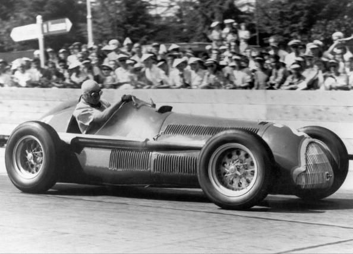

Fórmula 1
Saiba mais sobre a Fórmula 1

Fórmula 1
A história da Fórmula 1 tem início com as competições de Grandes Prêmios disputadas na Europa, no início do século XX. Apenas durante a Segunda Guerra Mundial, houve uma pausa. As competições de Grande Prêmio recomeçaram logo após o fim do conflito, em 9 de Setembro de 1945, prosseguindo até a atualidade, sem interrupções.
Seguindo os dirigentes do automobilismo, a FIA (Federação Internacional de Automobilismo) anunciou a prova inaugural do campeonato mundial de F-1, em um sábado, 13 de maio de 1950 no Circuito de Silverstone, na Inglaterra, para não coincidir com um culto religioso local. O campeonato anunciado compreendia 6 GPs a serem disputados na Europa: Inglaterra, Mônaco, Suíça, Bélgica, França e Itália, e seria ainda adicionado o resultado das 500 Milhas de Indianápolis, tornando, dessa maneira, um campeonato "mundial" (apesar do fato de que os carros, equipes e pilotos que competiam nos EUA serem completamente diferentes dos da Europa).
Devido às dificuldades do pós-guerra, os carros eram todos do pré-guerra. Permitiu-se a participação de carros com motores superpressurizados até 1,5 litro ou com motores aspirados de 4,5 litros. A confirmação da presença da Alfa Romeo foi determinante para o momento. Sua participação com as Alfettas, dominantes na época, trouxe prestígio para o campeonato. Confirmaram presença a Ferrari(mas os carros não ficaram prontos para a prova inaugural), Maserati, algumas "Voiturettes" ERA e carros esportivos modificados, como os Talbots.
Seriam descartados os 3 piores resultados das 7 corridas disputadas. A pontuação era assim dividida: 8 pontos para o primeiro colocado; 6 para o segundo; 4 para o terceiro; 3 para o quarto; 2 para o quinto colocado e um ponto para o piloto que marcasse a volta mais rápida da prova. A prova inaugural em Silverstone contou com um público de 100.000 pessoas estimadas, além da presença do Rei George VI, a Rainha Elizabeth e a princesa Margareth.